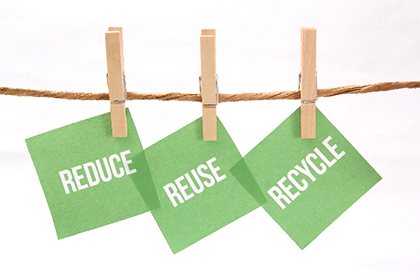

引越し時の荷物のまとめ方と処分の仕方
引越し業者に荷物の梱包を依頼しない場合には、自分で荷造りをしなければなりません。その過程で不要なもの、捨てるものが出てくれば、それらを処分するための手続きなども必要になります。今回はこの2つ、引越し時の荷物のまとめ方と、不要物の処分の仕方について解説しましょう。
引越し時の荷物のまとめ方
荷物のまとめ方にはコツがあります。効率よく作業を進めるために、次のようなことに気をつけましょう。
使用頻度の低いものから荷造りを始める
まず、引越しの荷造りはなるべく早いうちに始めたいものです。実際に作業を始めてみないことには、この先どれくらいのペースで荷物をまとめていけばいいのかも読めません。
とはいえ、旧居での生活がまだ続く内には必要な家財道具があるので、最初は使用頻度の低いものから徐々にまとめていきましょう。手始めは納戸や押入れ、倉庫に入っているものから手を付けるのがおすすめです。
荷物は分類し、適したサイズのダンボールへ
荷物は書籍、食器、調理器具、衣類などに分類してダンボールに入れるのが基本です。
その際、箱にたくさん詰め込むと重くなる書籍などは、小さな箱を選んで入れましょう。逆に、衣類など軽いものは大きな箱に入れます。そのためにダンボールは大小のサイズを用意するようにしましょう。
また、荷物を詰め終わったダンボールにはマジックで中身と、新居のどの部屋に運ぶのかを書いておきます。割れ物が入っているときは、作業員にわかるよう割れ物注意のシールを貼っておくことなども忘れずに。
不要なものは引越しを機に処分を検討する
納戸、押入れ、倉庫から作業を始めるのは、そうした場所には不要なものがしまってある可能性が高いからでもあります。引越しを機にいらないものを処分してしまえば、運ぶ荷物の量も減らせます。
粗大ゴミなどは早めに手続きをする必要があるので、最初から考えに入れておきましょう。他にも荷造りをしながら捨てるものをより分け、処分していきます。
引越し時の不要な荷物を処分する方法
不要品を処分する方法も紹介しておきましょう。何を捨てるかによってその方法も違ってきます。
粗大ゴミとして処分する
粗大ゴミは通常、自治体の回収サービスを使って処分します。申し込み可能な対象品目や方法は自治体によって異なるので、市役所や区役所のホームページで確認しましょう。なお、テレビ、エアコン、冷蔵庫、洗濯機・衣類乾燥機は家電リサイクル法対象品目なので、自治体では回収してもらえません。家電リサイクル受付センターなどに連絡を取りましょう。
パソコンやモニターも、メーカーによる自主回収・リサイクルが義務付けられているので、メーカーによる回収を依頼するのが基本です。
不要品処分の専門業者に依頼して処分する
パソコンや家電製品は、壊れたものでも送付すると無料で回収・処分してくれるサービスを行っている業者が存在します。引き取った業者は製品を分解してパーツを販売し、利益を出しています。ただし、ハードディスクなどは個人情報が入っていることがあるので安易に送らないほうがいいかもしれません。こちらは量販店などが「破壊サービス」を行っています。
なお、住宅街にトラックで回ってくる廃品回収業者は、無料を謳っているのに作業後に料金を請求される、車に積んだ後で見積もりより高い料金を請求される、といったトラブルが起きることがあるようですので、注意しましょう。
リサイクルショップに売る
パソコン、家電、家具、衣類などでまだ使用できるものはリサイクルショップに売る方法もあります。漫画を含む本、ゲームなども売れます。あるいは、時間と手間をかけられるなら、オークションサイトで売ることもできるでしょう。オークションはものによってはリサイクルショップに売るより高く売れる可能性があります。
引越し時の荷物は以上を参考に計画的に荷物としてまとめ、不要なものは処分するようにしましょう。